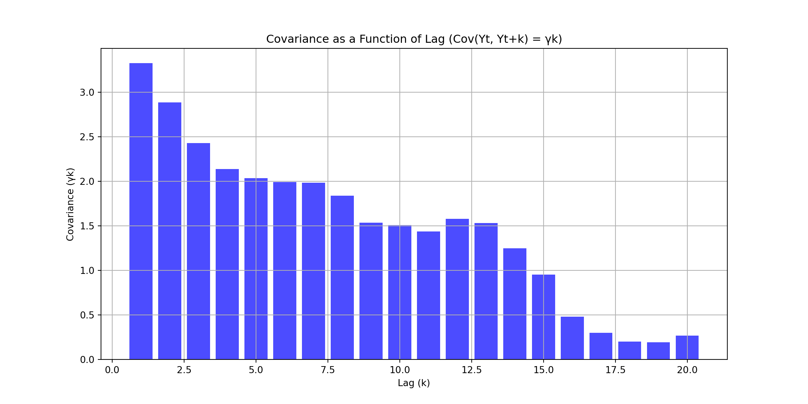
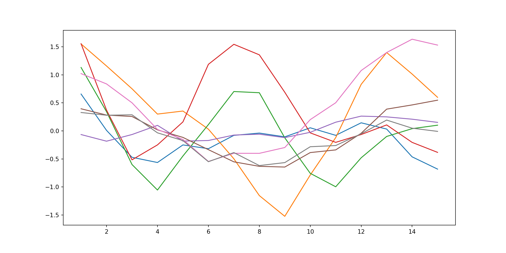
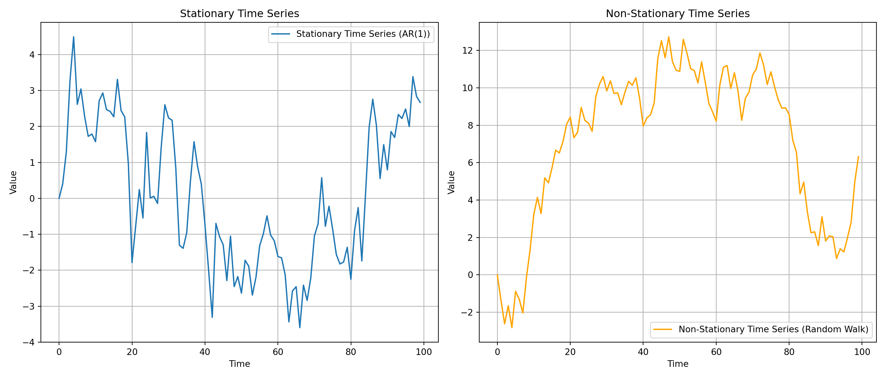

정상성(stationarity)은 시계열 데이터의 통계적 특성이 시간에 따라 일정하게 유지되는 상태를 말한다.
Author
Kwangmin Kim
Published
July 8, 2024
1 Introduction
다른 데이터와 달리, 시계열 데이터는 시간이 흐름에 따라 연속적으로 기록되며, 동일한 데이터가 반복되지 않고, 항상 새로운 데이터가 시간 축을 따라 순차적으로 추가된다는 특성이 있다. 따라서 시계열 데이터 분석은 추세, 계절성, 자기 상관성 등의 패턴을 분석하는 과정을 포함한다.
시계열 예측 모델은 이러한 시계열 데이터의 특성을 잘 반영하여 설계되어야 한다. 시계열 데이터의 주요 특성으로는 정상성, 비정상성, 지연, 차분, 자기 상관성, 백색 잡음 등이 있으며, 이러한 요소들을 고려한 모델링이 중요하다.
\(\text{Cov}(Y_t, Y_{t+k}) = \gamma_k \quad \text{모든 시간 } t \text{와 시간 간격 } k \text{에 대해}\)
2.1\(\text{Cov}(Y_t, Y_{t+k}) = \gamma_k\)
두 시점 사이의 관계가 그 사이의 간격(시차)에만 영향을 받고, 실제 시간 위치는 중요하지 않다는 의미다. 특정 시점에서의 값이 그 시점 이후의 값들과 얼마나 상관관계가 있는지를 측정할 때 그 상관관계가 시간 \(t\) 의 특정 위치와 무관하다는 의미이다. 다시 말해, 공분산이 \(t\) 에 따라 변하지 않고 오직 시차 \(k\) 에만 의존한다는 뜻
import numpy as npimport pandas as pdimport matplotlib.pyplot as plt# 시계열 데이터 생성np.random.seed(0)n =100lags =20# 시차의 최대값# AR(1) 생성 (phi = 0.8)phi =0.8y = np.zeros(n)epsilon = np.random.normal(0, 1, n) # white noisefor t inrange(1, n): y[t] = phi * y[t -1] + epsilon[t]covariances = [np.cov(y[:-k], y[k:])[0, 1] for k inrange(1, lags +1)]plt.figure(figsize=(12, 6))plt.bar(range(1, lags +1), covariances, color='blue', alpha=0.7)plt.title('Covariance as a Function of Lag (Cov(Yt, Yt+k) = γk)')plt.xlabel('Lag (k)')plt.ylabel('Covariance (γk)')plt.grid(True)plt.show()

Code
library(ggplot2)library(reshape2)# 시계열 데이터 생성set.seed(0)n <-100lags <-20# 시차의 최대값# AR(1) 생성 (phi = 0.8)phi <-0.8y <-numeric(n)epsilon <-rnorm(n, mean =0, sd =1) # white noisefor (t in2:n) { y[t] <- phi * y[t -1] + epsilon[t]}# 공분산 계산covariances <-sapply(1:lags, function(k) cov(y[1:(n-k)], y[(k+1):n]))# 그래프 그리기barplot(covariances, names.arg =1:lags, col ="blue", border =NA, main ="Covariance as a Function of Lag (Cov(Yt, Yt+k) = γk)",xlab ="Lag (k)", ylab ="Covariance (γk)")grid()# 시점 t 선택 (여기서는 예시로 여러 개의 t를 선택하여 비교)time_points <-c(0, 10, 20, 30, 40, 50, 60, 70)max_lag <-15# 각 시점 t에서 공분산 계산covariances_per_t <-data.frame(Lag =1:max_lag)for (t in time_points) { covariances <-numeric(max_lag)for (k in1:max_lag) { covariances[k] <-cov(y[t:(t+max_lag-1)], y[(t+k):(t+k+max_lag-1)]) } covariances_per_t[[paste0("t_", t)]] <- covariances}covariances_long <-melt(covariances_per_t, id.vars ="Lag", variable.name ="Time", value.name ="Covariance")# 시각화ggplot(covariances_long, aes(x = Lag, y = Covariance, color = Time, group = Time)) +geom_line() +geom_point() +labs(title ="Covariance as a Function of Lag for Different Time Points",x ="Lag (k)", y ="Covariance (γk)") +theme_minimal() +theme(legend.title =element_blank())
그래프에서 볼 수 있듯이, 특정 시차 \(k\) 에서의 공분산 값은 모든 시점 \(t\) 에 대해 동일한 패턴을 보인다. 이 같은 특성은 흔히 정상 시계열 이라고 불리며, 이는 시계열 데이터가 시간에 따른 일정한 통계적 특성을 갖고 있음을 의미한다.
시차(Lag)에 대한 의존성
시차 \(k\) 가 증가할수록 공분산의 값이 점차 감소하는 패턴을 보이고 있다. 이는 \(k\) 가 커질수록 시계열 데이터가 더 멀리 떨어진 시점과의 상관관계가 줄어든다는 것을 의미한다.
시간 \(t\) 에 대한 독립성
공분산이 특정 시차 \(k\) 에 대해서만 달라지고, 시간 \(t\) 자체에는 의존하지 않음을 의미. 즉, 동일한 시차 \(k\) 에 대해 어느 시간 \(t\) 에서 계산하든 동일한 공분산 값을 가진다.
이를 그래프에서 직접적으로 확인하기는 어렵지만, 중요한 점은 모든 시차 \(k\) 에 대해 공분산이 일정한 패턴(감소하는 경향)을 유지하고 있다는 것. 이는 시계열 데이터가 시간에 따라 변화하지 않는 정상성을 갖고 있음을 암시한다.
공분산이 시간 \(t\) 에 의존하지 않는다는 것은, 어느 시점에서 시작하든 동일한 시차 \(k\) 에 대한 공분산 값이 동일한 패턴을 보여야 한다는 것이다. 즉, 공분산 값의 감소 패턴은 특정 시점 \(t\) 에 국한되지 않고, 모든 시점 \(t\) 에 대해 동일하게 나타난다는 뜻이다.
그래서, 시차 \(k\) 에 따라 공분산이 감소하는 것은, 특정한 시점에서만 나타나는 현상이 아니라, 모든 시점에서 동일하게 나타나는 패턴이라는 것이다. 이 때문에 공분산이 시간 \(t\) 에 의존하지 않는다고 할 수 있다.
그래프에서 시점 \(t\) 가 달라져도 동일한 시차 \(k\) 에 대해 공분산이 같은 감소 패턴을 보인다는 점에서, 공분산이 시간 자체에는 의존하지 않고 시차에만 의존한다는 사실을 확인할 수 있다.
특정 시점 \(t\) 에서만 계산한 것이 아니라, 모든 시점 \(t\) 를 반영하여 계산된 공분산의 평균값이다.
Code
# 시점 t 선택time_points = [0, 10, 20, 30, 40, 50, 60, 70]max_lag =15# 최대 시차를 줄여 데이터 길이 문제 해결# 각 시점 t에서 공분산 계산covariances_per_t = {}for t in time_points: covariances_per_t[t] = [np.cov(y[t:t+max_lag], y[t+k:t+k+max_lag])[0, 1] for k inrange(1, max_lag +1)]# 시각화plt.figure(figsize=(12, 6))for t in time_points: plt.plot(range(1, max_lag +1), covariances_per_t[t], label=f't={t}')

위의 그래프는 여러 시점 \(t\) 에서 시차 \(k\) 에 따른 공분산 값을 보여준다.
서로 다른 시점 \(t\) 에 대해서도 시차 \(k\) 에 따른 공분산 값은 거의 동일한 패턴을 보인다. 이는 공분산이 시간 \(t\) 에 의존하지 않고 시차 \(k\) 에만 의존한다는 것을 의미한다.
3 정상성의 중요성
많은 시계열 모델(ARMA 포함)은 정상성을 가정한다.
Code
np.random.seed(0)n =100# 정상성을 갖는 시계열: AR(1) (phi = 0.8)phi =0.8y_stationary = np.zeros(n)epsilon = np.random.normal(0, 1, n) # 백색잡음for t inrange(1, n): y_stationary[t] = phi * y_stationary[t -1] + epsilon[t]# 정상성을 갖지 않는 시계열 (예: 랜덤워크)y_non_stationary = np.zeros(n)epsilon_non_stationary = np.random.normal(0, 1, n) # 백색잡음for t inrange(1, n): y_non_stationary[t] = y_non_stationary[t -1] + epsilon_non_stationary[t]plt.figure(figsize=(14, 6))plt.subplot(1, 2, 1)plt.plot(y_stationary, label='Stationary Time Series (AR(1))')plt.title('Stationary Time Series')plt.xlabel('Time')plt.ylabel('Value')plt.grid(True)plt.legend()plt.subplot(1, 2, 2)plt.plot(y_non_stationary, label='Non-Stationary Time Series (Random Walk)', color='orange')plt.title('Non-Stationary Time Series')plt.xlabel('Time')plt.ylabel('Value')plt.grid(True)plt.legend()plt.tight_layout()plt.show()

정상성을 갖는 시계열 (Stationary Time Series):
왼쪽 그래프는 AR(1) 프로세스에 의해 생성된 정상성을 갖는 시계열. 이 시계열은 평균과 분산이 시간에 따라 일정하게 유지된다. 즉, 데이터의 변동이 시간에 따라 크게 변화하지 않고 상대적으로 일정한 패턴을 보인다.
정상성을 갖지 않는 시계열 (Non-Stationary Time Series):
오른쪽 그래프는 랜덤 워크(Random Walk)에 의해 생성된 정상성을 갖지 않는 시계열. 이 시계열은 시간에 따라 평균이나 분산이 변하는 경향을 보이며, 데이터가 시간이 지남에 따라 특정 방향으로 이동하거나 더 넓은 범위로 퍼진다.
정상성을 가진 데이터는 예측이 더 쉽고 신뢰할 수 있다.
비정상 시계열은 과거 패턴이 미래에 그대로 적용되지 않을 수 있어 예측이 어렵다.
4 정상성 검정
시각적 검사: (정성적 방법) 시계열 플롯, ACF(자기상관함수) plot 등을 통해 대략적으로 파악
통계적 검정: (정량적 방법) Augmented Dickey-Fuller 검정, KPSS 검정 등
5 비정상 시계열의 정상화 방법
차분(Differencing): 연속된 관측값의 차이를 구함
로그 변환: 지수적 증가 추세를 선형화
계절성 조정: 계절적 패턴 제거
6 약정상성 (Weak Stationarity) vs 강정상성 (Strong Stationarity)
약정상성
정상성의 정의를 만족
약 정상성은 시계열의 기본적인 통계적 특성인 평균과 분산, 공분산이 시간에 따라 변하지 않도록 요구하는데, 이는 주로 선형 모델이나 통계적 분석에서 주로 사용된다.
강정상성
모든 차수의 결합 확률 분포가 시간에 따라 불변
실제 응용:
경제 지표, 주가, 기상 데이터 등 많은 실제 시계열은 비정상적입니다.
이러한 데이터는 적절한 변환을 통해 정상화한 후 분석합니다.
정상성은 시계열 모델의 기본 가정이며, 데이터의 특성을 이해하고 적절한 모델을 선택하는 데 중요한 역할을 합니다.